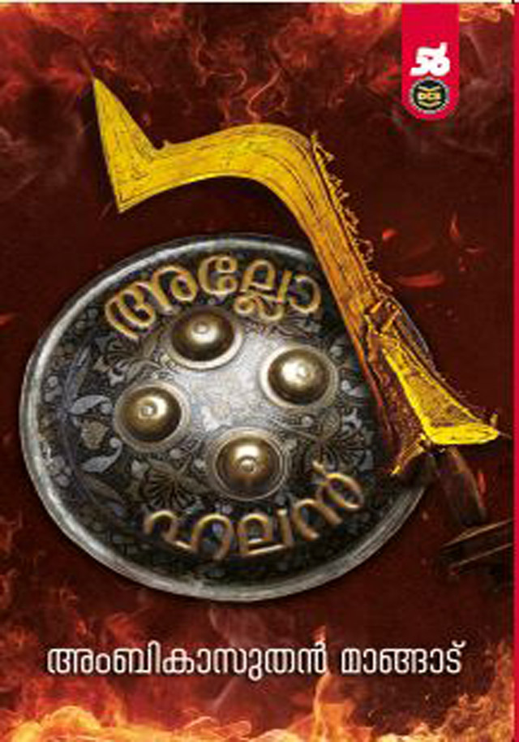

Author: അംബികാസുതൻ മാങ്ങാട്
Review by: പ്രിയ രാധാകൃഷ്ണൻ
"നീങ്കളെ കൊത്യാലും ചോരല്ലേ ചൊവ്വറേ
നാങ്കളെ കൊത്യാലും ചോരല്ലേ ചൊവ്വറേ
പിന്നെന്തിന് ചൊവ്വറ് കുലം പിശക്ന്നേ "
തെയ്യത്തട്ടകങ്ങളിലെ ചുടുകനലാളുന്ന മേലേരിയിൽ കിടന്ന് പൊട്ടൻതെയ്യം ചോദിക്കുന്ന ചോദ്യം ഇടയ്ക്കിടെ മനസ്സിൽ മുഴങ്ങും അംബികാസുതൻ മാങ്ങാടിന്റെ 'അല്ലോഹലൻ' വായിച്ചതിൽ പിന്നെ. ജാതിവ്യവസ്ഥയുടെ സൃഷ്ടിയായ 'തീണ്ടലും തൊടീലും'ശക്തമായി നിലനിന്നകാലത്ത് മേലാളനായ ബ്രാഹ്മണനോട് പൊട്ടൻ എന്ന് വിളിപ്പേരുള്ള പുലയയുവാവ് ചോദിക്കുന്ന ചോദ്യം... വരേണ്യവർഗ്ഗത്തിന്റെ അഭിമാനത്തെ മുറിപ്പെടുത്തിയതിനാൽ അവനു മരണം വിധിക്കപ്പെട്ടു!!. അവൻ പൊട്ടൻതെയ്യമായി ഉയിർത്തെഴുന്നേറ്റ് ജാതിവൈകൃതങ്ങൾക്കെതിരെ വാചാലുകളും ഉരിയാടലുകളും നടത്തുമ്പോൾ ഭക്തിയോടെ തൊഴുകയ്യോടെ നേര് നേര് എന്ന് ശിരസ്സനക്കി നാലുജാതിയും നിൽക്കും!! വർണ്ണാശ്രമവ്യവസ്ഥയുടെ അതീവ നിന്ദ്യവും നിർദ്ദയവുമായ നീതികേടുകൾക്ക് ഇരയായി കൊടുംചതിയിൽ ഒരുകാലത്തു അരുംകൊലചെയ്യപ്പെട്ട കീഴ്ജാതിക്കാരാണ് തോറ്റം പാടിക്കൊണ്ട് തെയ്യമായി വന്ന് ഉറഞ്ഞാടുന്നതെന്ന് നോവൽ പറയുന്നു. പൊട്ടനെയും ചാത്തനെയും മറ്റു നിരവധി കഥാപത്രങ്ങളെയും പോലെ അല്ലോഹലൻ എന്ന കീഴാളഭരണാധികാരിയും കുലവെറിയുടെ വാളിനൂണാവുന്നു. കുലമഹിമയുടെയും വർണ്ണാശ്രമമഹിമയുടെയും അധീശത്വ വ്യവസ്ഥാമൂല്യങ്ങളെ സംരക്ഷിക്കുക എന്നതാണ് തന്റെ ജന്മദൗത്യമെന്ന് ഊണിലും ഉറക്കിലും വിശ്വസിക്കുന്ന 'സത്യപാലൻ' എന്ന പടത്തലവൻ. ഇതിഹാസങ്ങളെ വരെ കൂട്ടുപിടിച്ചുകൊണ്ടു വ്യവസ്ഥാസംരക്ഷണത്തെ ന്യായീകരിക്കുന്നു. വടക്കൻ കേരളത്തിന്റെ സാമൂഹ്യ ചരിത്രം തന്നെയായ ഈ നോവലിന്റെ രചനയിൽ മാഷ് തന്റെ അറിവനുഭവങ്ങളോടൊപ്പം കുറച്ചധികം ഗ്രന്ഥപരിശോധനകളും നടത്തിയിട്ടുള്ളതായി മനസ്സിലാക്കാം. ഈ പുസ്തകം വായനാലോകത്തിന് ഒരു മുതൽക്കൂട്ടു തന്നെ.
ഈയിടെ വായിച്ച 'മരണവംശ'വും 'ഒട'യുമെല്ലാം ഉത്തരകേരളത്തിന്റെ തനതായ ആചാരാനുഷ്ടാനങ്ങളെക്കുറിച്ചും മറ്റും പ്രതിപാതിക്കുന്നവയാണ്.❤️